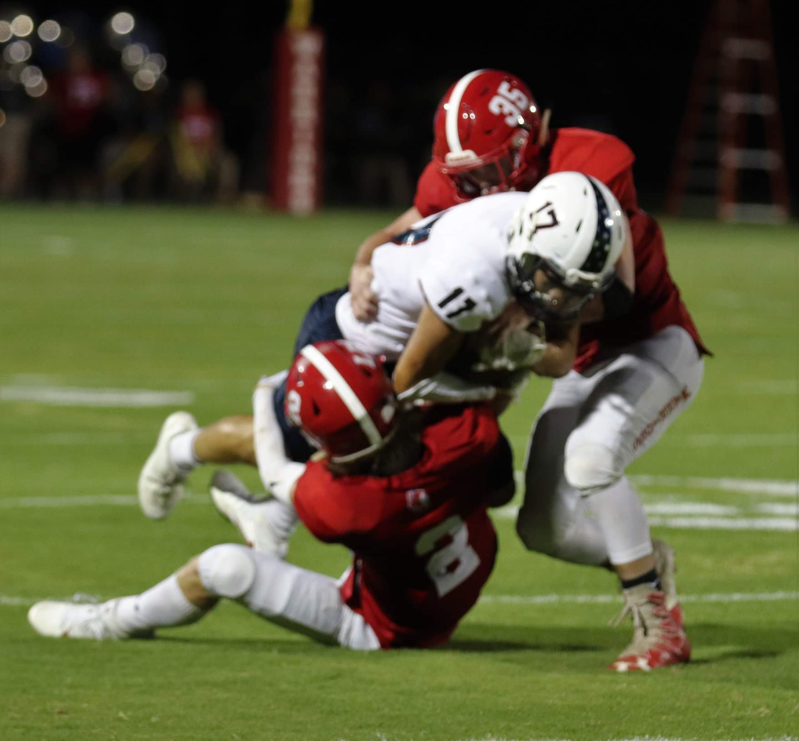

/\şĦ
I was born in 2002 in Chattanooga, Tennessee, and at 2 me and my family moved to Alaska. After coming back to Chattanooga we then moved to Hawaii when I was five. Fast forward to now Im in and out of Chattanooga for the time being. I have a beautiful, hard-working mother and I hve 4 siblings three of them being triplets and the other one a sister. These are my bestfriends. I played football in college, but as you can see in the rest of my page... my talents leadme elsewhere. I now do everything I possibly can to get to where I need to be so that I may provide my family with the best oppurtunities avaialable. Most importantly I want to see them enjoy life. If I care about something there isn't anyone who will provide more of an effort towards such value.
ƉΞ/\Ͷ
...stopped worrying about making everyone else happy... because he can't make the people he cares about happy until he was doing well himself. He think friends are overrated. All his friends have betrayed him, and abandoned him...but He knows that it was truly God's way of telling him that his friends couldn't go where He was going. His goals are broad, very distinctive, and even unique. No longer will he let his life be dictated or controlled by anyone else other than Him. If anyone has a problem with it, He says oh well...Do as I say not as I do...fair disclaimer.